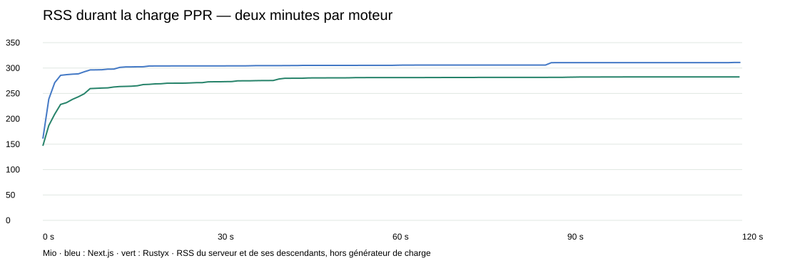

Nouvelle optimisation CPU : comparaison avant/après/Next, passages répétés de 30 s et contrôle de 120 s.
Sur la charge PPR mixte : RAM -22.8 %, CPU par réponse -24.2 %, débit +25.1 %. La boutique Edge réduit sa RAM de 7.2 %. Par rapport à Next rejoué dans la nouvelle campagne, le PPR Rustyx utilise 13.7 % de RAM en moins, mais encore 7.5 % de CPU supplémentaire par réponse ; les débits sont proches. La RAM Edge reste supérieure à Next.
Explication et validation · Mesures détaillées face à Next.js
| Charge mixte | RAM Rustyx avant / après (Mio) | CPU avant / après (ms/1 000 req) | Débit avant / après (req/s) |
|---|---|---|---|
| boutique | 227.3 / 211.0 | 297 / 295 | 6627 / 6784 |
| boutique-node | 130.0 / 130.3 | 120 / 120 | 23786 / 23865 |
| journal | 149.4 / 143.6 | 104 / 106 | 23912 / 23278 |
| dashboard | 232.6 / 179.7 | 1443 / 1094 | 1149 / 1438 |

| PPR sur 120 s, concurrence 8 | Requêtes valides | Erreurs | RSS premières / dernières 30 s (Mio) | Pic échantillonné (Mio) | RSS après 15 s de repos (Mio) |
|---|---|---|---|---|---|
| next | 264534 | 0 | 302.3 / 310.6 | 311.0 | 156.2 |
| rustyx | 235034 | 0 | 264.2 / 282.5 | 282.5 | 158.5 |
| PPR prolongé | Débit (req/s) | CPU (ms / 1 000 requêtes) | p95 (ms) |
|---|---|---|---|
| next | 2204 | 543 | 8.63 |
| rustyx | 1959 | 750 | 5.12 |
Sur cette charge prolongée : débit Rustyx environ 11 % inférieur à Next et CPU par réponse environ 38 % supérieur ; RAM sous charge plus basse.
Les requêtes portent des cookies distincts. Aucun résultat ne suffit à garantir l'absence de fuite sur une exécution de plusieurs heures.
Séries RSS et résultats bruts